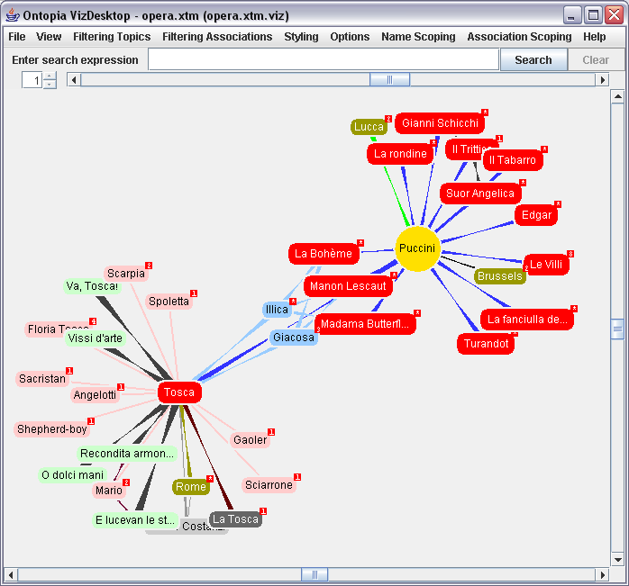

|
This document introduces the reader to Vizigator. It provides guidance on the use of Vizigator to:
visualize and navigate topic maps;
customize the visualization characteristics of a topic map for an application; and
embed a visualization window in web applications built using Ontopia.
Reading this document assumes some basic knowledge about topic maps. If you are not familiar with topic maps, try reading one of the simple introductions, such as The TAO of Topic Maps, available from the Ontopia web site. If you are technically minded, you might also want to look at the XTM Specification or the latest drafts of the new version of ISO 13250, especially the Data Model.
We welcome any suggestions you might have on ways of improving this User Guide. Please send them to the mailing list.
Happy Vizigating!
The Topic Maps model describes the knowledge structures inherent in an underlying body of information. This model, which reflects the associative mode typical of the way humans think, can then be intuitively perused in different ways.
One possibility is a text-based interface. The Ontopia Omnigator (the name is a contraction of "omnivorous navigator") uses a form-based navigation paradigm that is commonly known and used by most of us every day when using the web.
However, often a picture or graphic can be easier to grasp than a wordy description. The Ontopia Vizigator ("vi[z]ual navigator") uses a graphical interface to provide an additional method of topic map navigation. Although Vizigator can be used on its own, it is also well-suited to complement a text-based interface.
Vizigator consists of three components which are related/dependent on each other.
VizDesktop - designer's configuration tool
VizDesktop can be used without any other Ontopia browsing environment. However, it is primarily a configuration tool for application designers to determine whether and/or how various topic types and associations will be graphically displayed. This is the entry point to the entire Ontopia Vizigator. To get started, see section 2
VizLet - reusable applet component
All of the visualization capability of VizDesktop, but without the configuration toolkit, VizLet can be used within other web applications. To bring topic map visualization to any web site, see section 3
VizPlugin - Omnigator plug-in
Based on VizLet, VizPlugin can be used to visualize any topic currently under view in Omnigator. To find out more about navigating visually in Omnigator, see section 4
Vizigator uses TouchGraph, an open source toolkit for graph visualization, which is maintained as a Sourceforge project. For further information, please see the Sourceforge project homepage and the TouchGraph homepage with other example applications.
Vizigator is designed for graphically browsing and navigating topic maps. It supports all aspects of ISO 13250 with the exception of merging and some aspects of scope. It accepts topic maps in a variety of serialization syntaxes.
Vizigator is used to visualize a topic map, not an ontology. That is, Vizigator is designed to help users understand, navigate, and browse a populated topic map via a graphical interface.
It is possible to visualize an ontology using Vizigator; however, it requires modifications to the topic map. One way to accomplish this is to create a topic type, such as 'ontology_topic' and make all typing topics an instance of that type.
Creating and editing topic maps via Vizigator is not supported at this time.
Vizigator has internationalization support for translating the user interface into any language. The following table lists the currently supported languages and the codes that should be used to designate their use (see section 2.1 and section 3.2). Additional languages will be added over time.
Table 1.1. Interface localizations
| Language | Code | Translation Acknowledgements |
|---|---|---|
| English | en | - |
| Japanese | ja | Thank you to Motomu Naito, CEO of partner Knowledge Synergy, Inc., Japan |
| German | de | Thank you to Ingo Schönfeld, Knowledge Engineer at ATLAS Elektronik GmbH, Germany |
| Norwegian | no | - |
Users interested in translating the interface to an unsupported language should contact the Ontopia project mailing list.
VizDesktop provides:
a simple graphical topic map browser;
tools to configure views for Omnigator (VizPlugin) or your own application (VizLet).
The VizDesktop application is developed using the GUI toolkit (Java Foundation Classes(JFC)/Swing) provided with Java platform 2 standard edition (J2SE). The general look and feel of the user interface is according to the Java Swing controls in order to run on both Windows and Unix/Linux clients.
Prerequisites: VizDesktop is a Java application and requires the Java Developer Kit (JDK), Standard Edition Version 1.3 (or higher).
Starting VizDesktop:
On Windows execute the vizdesktop.bat file in ${ONTOPIA_HOME}\bin.
On UNIX/Linux execute the vizdesktop.sh file in ${ONTOPIA_HOME}/bin.
To set the language used in the VizDesktop interface, you can edit the command line in the .bat or .sh file with the parameter --lang=<lang> where <lang> is a two-character designation of the language to be used. (See section 1.3 for the list of supported languages.) Alternatively, you can add the parameter when invoking the batch files:
On Windows: vizdesktop --lang=<lang>
On UNIX/Linux: vizdesktop.sh --lang=<lang>
Please send all comments to support@ontopia.net. Bugs can be reported in the bug database.
Conventions for visualization of topic map constructs are as follows:
Topics appear as nodes with a topic name. Other names by which the topic is known are available via the Properties box accessible via the context menu (right click on the topic).
Alternatively, all topic names in a given scope can be displayed by choosing a scoping topic from the Name Scoping menu item. If a topic does not have a name within a chosen scope, the unconstrained scope topic name is used.
The algorithm for determining which topic name to display in the unconstrained scope is as follows:
use an unscoped name (randomly selected if more than 1),
else, use a scoped name (randomly selected if more than 1).
Very long topic names will be shortened algorithmically to aid visualization. Shortened names will end in '...' and holding the mouse over the node will cause the name to expand.
Topic Types are distinguishable based on the shape, color, and other style characteristics applied to the node. The name of the type is available on the Properties box.
Associations between topics are shown as edges (lines). Association types are distinguishable based on the shape and color of the edge. Association types and role names are visible during mouse-over; role names may be optionally suppressed.
By default, all associations in all scopes are displayed. It is possible to filter associations by scope using the Association Scoping menu item (see section 2.4.7).
Occurrences, grouped by type, are viewable via the Properties box.
It is not possible to navigate to the occurrences in VizDesktop, only in VizLet and VizPlugin.
If no predefined configuration is associated with a topic map, each type of topic and each type of association is automatically and randomly assigned a color each time the topic map is opened. These colors can be changed and saved in a configuration for the specific topic map.
For the purposes of this section, we will ignore the fact that the graph in Vizigator represents a topic map, and instead focus on the graph and what happens to it. This means that in general, a node is considered to be just a node, regardless of whether it represents a topic or an association.
The graph available through Vizigator is best seen as divided into three sets:
This is the entire, unfiltered graph where every topic and association in the topic map have corresponding nodes and edges.
This is the graph as filtered by the type and scope filter settings.
This is the graph that is actually shown in the Vizigator screen (including parts that may be scrolled off outside the rectangle currently being shown).
The visible graph is always a subset of the filtered graph (though not necessarily a true subset), and the filtered graph is always a subset of the complete graph (though again not necessarily a true subset). The filter settings determine what's in the filtered graph, but determining what is in the visible graph is more complex. There are two views or modes of operation for the visible graph:
In Map View the visible graph is the filtered graph, minus nodes and edges explicitly hidden by the user.
In Topic View, that is, when there is a Focus Node, the visible graph is the fragment of the filtered graph within X steps of the Focus Node. However, the user can modify the visible graph by both adding and removing nodes and edges.
Focus Node. The node from which the locality is computed in Topic View. It is designated by double clicking on a topic or by defining or using a Start Topic. If in Map View at the time a Focus Node is chosen, the display changes to Topic View; if in Topic View, the display refocuses on the new Focus Node.
The Focus Node is identified visually by a deep yellow color. Use of this color in a configuration should be avoided.
Start Topic. The node that is focused when the topic map is opened (if there is a pre-defined configuration that includes a Start Topic). Topic View is initiated when a topic is designated as the Start Topic (via the topic's context menu) or when choosing to focus on a previously defined Start Topic via the View\Focus Start Topic menu item. Only one topic can be designated as the Start Topic at any one time. Returning to Map View or designating a new Focus Node does not affect the Start Topic designation.
When initially loading a topic map, dialog boxes allow the user to choose a Focus Node, to proceed with modelling a Map View, or to cancel the loading. From a Topic View, Map View can be can be restored via the View\Map View menu item.
VizLet (and VizPlugin) and VizDesktop behave the same way, with the exception that VizLet always operates in topic view.
The VizDesktop window includes a main menu bar, three scroll bars, a number control, and a search box:
VizDesktop Window. The file names of the open topic map and loaded configuration (if any) are displayed at the top of the VizDesktop Window.
Menu bar. See section 2.2.4
Scroll bars. The vertical scroll bar at the right of the window and the horizontal scroll bar at the bottom of the window are used to position the graph in the viewing area, much like any other graphical viewer. The graph also can be repositioned by dragging the nodes using the mouse or by dragging the background.
Zoom bar. The scroll bar at the top of the screen, the zoom bar, is used to zoom in/out of the topic map. When the thumbwheel is all the way to the left, all of the nodes are very close together and the lines between them will not even be visible. As the thumbwheel is moved to the right, the nodes spread out and the relationships (lines) become visible. The optimum location of the zoom bar's thumbwheel will vary based on the size of the topic map or the portion of the topic map chosen for viewing.
Locality factor. To the left of the zoom bar is a box with an increment/decrement number control. This locality factor designates the maximum number of hops to be displayed from the Focus Node when in a Topic View. Locality factor has no effect on Map View.
The locality factor number can be changed by clicking on the arrows or by typing in a number. The maximum value accessible using the arrows is the maximum distance between topics within the current topic map. If some associations have been filtered out of the view, the number might be misleading because even though the locality factor is increased, the display won't change.
A small red box with a number (or asterisk for numbers higher than 9), the further-associations box, appears in the upper right hand corner of a topic shape when a topic has additional associations that are beyond the range of the locality factor. A single left click on the topic will display that set of associations. The display can be collapsed again by right clicking on the topic and choosing collapse node from the context menu. Associations outside the range of the locality, or those not made to other topics within the locality will be removed. Those that are within the locality or are linked to other topics within the locality will remain.
Search box. The search box is located just above the zoom bar at the top of the window. See section 2.3 for details on the use of the search box.

Figure 1. VizDesktop user interface
To hide/display the scrollbars, zoom bar, search box, and locality factor, right click on the background and select "Toggle Controls". Alternatively, only the search box can be removed from the display through use of the check box.
The main menu bar consists of the following menu items:
File - menu choices include loading a topic map into the viewer, saving a configuration, and specifying an RDF mapping file.
When vizigating a topic map view of an RDF file, Vizigator looks for an RDF mapping file. The default file is mapping.rdff and is located in $TOMCAT_HOME\webapps\omnigator\WEB-INF\topicmaps (the default location for the mapping file used by Omnigator). The name of the file and its location may be changed or additional mapping files may be designated via the File\RDF mapping file menu item.
View - menu choices for viewing modes and focus.
Filtering Topics - a checklist (on/off) to decide which topic types will be visible in the display. For further details on using filtering, see section 2.4.2.
Filtering Associations - a checklist (on/off) to decide which associations will be visible in the display. For further details on using filtering, see section 2.4.2.
Styling - menu choices for styling topic and association types. For further details on using Styling, see section 2.4.3.
Options - mechanisms for generally configuring the viewing environment. For further details on using Options, see section 2.4.4.
Name Scoping - when defined in the topic map, a list of topics that are used to choose among a topic's names for the one to be displayed. For further details, see section 2.4.6
Association Scoping - when defined in the topic map, a set of topics that are used to filter the types of associations to be displayed. For further details, see section 2.4.7
Help - information on Vizigator.
If a menu item has been assigned a keyboard short cut, it is shown to the right of the item's name.
Vizigator recognizes all files with the extensions .xtm,.hytm, .ltm, .tmx, .rdf, or .n3.
What to expect when loading a topic map will differ depending on whether or not a configuration has been saved for the topic map.
When loading a topic map for the first time, it will open in Map View or Topic View based on the user's choices in the Select initial topic and follow-on dialog boxes. It does not load any default configuration which could reduce the complexity of a large topic map.
When loading a topic map for which there is a configuration, the visualization will conform to the parameters of the configuration (see section 2.4.1). If a Start Topic was designated, it will open in Topic View; otherwise, it will open in Map View.
Hints for achieving a sensible display of a very large topic map:
Setting the zoom bar furthest to the left will force the greatest number of topics into the viewing space; in most cases it will include all topics. Use the zoom bar to zoom into the topic map and choose a current topic by double clicking a topic. The view will change into the Topic View with the focus around the chosen topic and in conformance with the current locality factor.
Although a locality factor of 2 or 3 for a topic view may seem like quite a low number, in a large topic map there can still be an overwhelming number of topics visible. It is often easier to start with a locality factor of 1 and increase that as needed.
Removing the 'Instance of" association is often useful when the locality is set to 2 or more in a large topic map. For example, if the topic under consideration is Florence, one association level away might be the topic city, and two associations away would be all other instances of city. Removing the Instance of association, would remove the presence of all of the other topics that are instances of type city.
To quickly find a specific topic, use the search box (see section 2.3).
The following section gives a short introduction and overview of the default actions available using the mouse:
left mouse button; single click on a topic - expand topic (equivalent to context menu 'Expand node'); has no effect on topics without a further-associations box or within Map View.
left mouse button; double click on a topic - make the topic the Focus Node and the locality factor triggers how many related topics are displayed.
right mouse button, click on background - displays menu items for toggling on/off the window controls (locality factor, zoom bar, search box, and scroll bars) as a group or the search box individually.
right mouse button, click on a topic - the context menu pops up.
The context menu displays all the actions that can be applied to the topic (e.g., expand, collapse, hide node, set as start node), provides access to the topic's Properties box (for names, types, and occurrences), and allows the topic to be designated as sticky (topic will remain positioned relative to other topics where specifically moved by user).
right mouse button, click on an edge (association) - displays Hide edge menu choice. By clicking on Hide edge, the edge will be hidden and connected topics, which will be then disconnected, will also acquire a further-associations box (or have the number in their further-associations box incremented).
mouse-over edge (association) - displays the name of the association.
For changing the default mouse actions, see section 2.4.4
This section summarizes the effects of the various operations. Since the effects of operations are different in the two views, each view is described separately.
Topic View is the view where there is a Focus Node, and the visible graph (at least initially) contains only the nodes within a specified distance (the locality) of the Focus Node. Distance is computed with no regard to whether nodes represent topics or associations. The Focus Node is always in the visible graph.
If hiding the node disconnects part of the visible graph that part is removed.
If hiding the edge disconnects part of the visible graph that part is removed.
All nodes in the filtered graph that are neighbours of the expanded node become visible together with the edges connecting them to the expanded node and any edges between the newly visible nodes.
All nodes which only have edges to the collapsed node and between each other are removed from the visible graph.
Whether done by double-clicking a node or setting the Start Topic, recomputes the visible graph from the new Focus Node with the existing locality setting.
Recomputes the visible graph from the existing Focus Node with the new locality setting. (This ignores the user's expanding/collapsing/hiding modifications, but is a consistent behaviour, matches the current code, and is the simplest option.)
Any nodes and edges filtered out of the visible graph are removed, and any parts of the graph disconnected from the Focus Node by this are also removed.
The topic view is recomputed, but without hiding already visible nodes/edges outside the topic view.
The node and all its edges are removed from the visible graph.
The edge is removed from the visible graph.
Any of the node's edges which are in the filtered graph but not in the visible graph are added, together with the nodes on the other side and any edges between those nodes in the filtered graph but not in the visible graph.
All nodes which only have edges to the collapsed node and between each other are removed from the visible graph.
Whether done by double-clicking a node or setting the Start Topic, moves into topic view.
No effect.
Any nodes and edges filtered out of the visible graph are removed.
New nodes and edges are added to the visible graph.
The Properties box is accessed via a topic's context menu (right mouse click). Where applicable, it contains:
The topic's Topic Name(s);
The topic's Type(s);
The topic's Subject Indicator(s) and
The list of Occurrences associated with the topic, grouped by occurrence type.
Figure 2. Properties Box
The Properties box remains open until specifically closed. Its contents are updated each time a different topic's properties are requested.
The search box provides an alternative way to find topics. Enter all or part of a topic name in the search box. Vizigator will search the topic names that appear in the topic shapes. The hits will blink and the visible part of the topic map will be repositioned to center the hit with the highest relevance (i.e., closest matches).
If more than one hit is displayed, the topic type can be determined by right clicking on a blinking topic to a ccess its Properties box. Once the appropriate topic has been found, right clicking to set it as the Start Topic will localize a Topic View around the chosen topic.
Using the Clear button will clear the search box, stop all topics from blinking, and reset the cursor within the search box.
A configuration is defined by the current state of each of the items under the following menus:
Filtering Topics;
Filtering Associations;
Styling;
Options;
Topic Type Precedence;
Name Scoping; and
Association Scoping
Optionally, if a Start Topic is specified, it will be saved as part of the configuration.
The locality factor is not saved as part of a configuration. If a topic map is opened in Topic View, it will conform to the current setting of the locality factor.
The Filtering Topics and Filtering Associations menus provide checklists for including or excluding topic and association types to be displayed. Unchecking the box of a particular topic type will remove all of the topics of that type from the visualization, as well as any associations by which they are linked to other topics. Conversely, unchecking the box of a particular association type will remove all of the associations of that type and any topics that are only in the visualization because of that association.
For example, assume that a topic map has both born-in and died-in associations, each expressing relationships between a person and either a city or a country.
Unchecking the topic type city will remove not only all of the topics of type city, but also all born-in and died-in associations in which a city plays the place role, but not in which a country plays that role. Unchecking the born-in association will remove all such associations and topics of type either city or country that play the place role in each instance of that association (and which do not play any other roles in that view).
Note that if the checkbox is shown in gray this means that the topic or association type has no setting, and that the setting used is that of the default topic or association type. Checkboxes shown in green or red are set specifically for the given topic/association type. The menu will contain an item for "Default type" which can be used to change the default setting.
The Styling menu consists of two items to change the randomly pre-assigned shapes, colors, and fonts used to designate topic and association types.
The Styling\Styling Associations and Styling\Styling Topics menu items each bring up similar dialog boxes for choosing the Shape (geometric shape, weight) , color, and font to be used for topics or associations of a particular type. The Icon portion of the Shape tab can be used to stipulate an icon to appear to the left of each topic of that type. Clicking Clear will clear the field and remove the icons for the designated type.
Note that a type can either have a specified setting, or it can use the setting for the default type. The default type appears in the list and its settings can be changed just like those of real types. There is also a button for each type that can be used to remove all settings so that it reverts to getting its settings from the default type.
The Options\General menu item brings up the multi-tabbed General Options dialog box, which is used to set more general parameters:
Interaction - mouse button default behavior is described in section 2.2.6; this tab is used to override that behavior and to designate the amount of information to be displayed when hovering over an association.
Background Color - for choosing the background color to be used in the visualization.
Topic Type Exclusion - for choosing the typing topics that should not be visible. Continuing the example from section 2.4.2, unchecking the city topic type under the Filtering Topics menu will remove all instances of city, but will not remove the city topic itself. This dialog box can be used to remove the typing topic city, regardless of whether instances of the topic type are also removed.
The Options\Topic Type Precedence menu item brings up a simple dialog box that can be used to specify the precedence order of topic types. This is used to determine how to render topics which have more than one type. Topics which have more than one type will then be rendered according to the configuration for the topic which is comes first in the precedence order.
The Name Scoping menu offers a choice of scoping topics available in the topic map (if any) to be applied to the Topic Names of all topics. Choosing a scoping topic makes that scope active. The active scope will be saved with a configuration.
The Association Scoping menu offers a choice of scoping topics available in the topic map (if any) to be applied to the Association Types of all topics.
The menu is divided into two sections. The top section has three options:
Show All: In this mode, the scope filter is off, and none of the settings in the lower part of the menu have any effect. All associations are shown, regardless of their scope.
Loose Filter: In this mode, the scope filter is on, and all associations whose scopes contain one of the chosen scoping topics in the lower section will be shown.
Strict Filter: In this mode, the scope filter is on, and all associations which are in the unconstrained scope or whose scope contain all of the chosen scoping topics will be shown.
The lower section contains one item for every topic that occurs in the scope of an association in the topic map, sorted alphabetically. If the scoping topics are instances of more than one type (say, if some are instances of "language" and others of "country"), the menu will have an additional level.
Choosing a scoping topic makes that scope active. The active scope will be saved with a configuration.
The current state of the configuration settings can be saved using the 'File menu'.
When a topic map (e.g., foo.xtm) is loaded into VizDesktop, if a configuration file (e.g., foo.xtm.viz) exists in the same directory, it will be automatically loaded at the same time.
Otherwise, a topic map is loaded without a defined configuration, that is, all topics and associations are visible and VizDesktop uses default shapes and fonts, and randomly assigned colors for topic and association type displays.
In order for configuration files to properly do their job, they have to be able to reference topics in a topic map. There are a number of ways in which this can be done, some more robust than others.
The most robust method is through a subject identifier, which Vizigator will use if available. Where no subject identifier has been specified by the author of the topic map, the fallback solution is for Vizigator to use the item identifier, which involves pointing back into the source topic map file itself. What this means is that if the file is moved to another location, the references may break. The moral of this story is always use subject identifiers, especially for typing topics.
VizLet is an applet that provides the same visualization functionality as VizDesktop, except that the menu bar (and all the functionality available through it), is unavailable. VizLet is intended to be used to add visualization functionality to web applications and can be embedded in any web application.
The following restrictions apply to VizLet compared to VizDesktop:
The configuration cannot be changed. That is, filter settings, colors, etc., are loaded from the server and cannot be modified by the user.
The topic map to be vizigated is given in the settings loaded from the server and cannot be changed.
The following differences apply to VizLet compared to VizDesktop:
Each time VizLet is entered, it will be:
in Topic View;
with locality of 1; and
with the topic used to initiate vizigation set as the Focus Node.
There is no Map View.
Even if a Start Topic has been specified in the configuration, there is no provision to access it in the VizLet interface.
It is possible to navigate to the Occurences listed in the Properties box.
A topic's context menu (right click) contains the "Go to Topic Page" item, supporting reverse navigation back to the text-based view of the topic map.
The Association Scoping menu is available on the popup menu when right-clicking on the background. It will have the same functionality as in VizDesktop, but will only contain the topics used in the scope of associations in the topic map fragment held by the VizLet at that time.
VizLet can be added to a web page by adding the following HTML to the page:
<applet width="800" height="800" alt="Ontopia vizlet"
code="net.ontopia.topicmaps.viz.Vizlet.class"
archive="ontopia-vizlet.jar">
<param name="baseuri" value="omnigator/plugins/viz/"/>
<param name="tmid" value="opera.ltm"/>
<param name="idtype" value="indicator"/>
<param name="idvalue" value="http://www.topicmaps.org/xtm/1.0/country.xtm#cn"/>
</applet>
The applet parameters are as follows:
In order for this to work, a number of things need to be set up on the server side, and we will walk through them one by one. One example of how this can be done can be found in VizPlugin for Omnigator; looking at its source code may be instructive.
The first step is to make the ${ONTOPIA_HOME}/extras/ontopia-vizlet.jar file available on the server side. Put it anywhere you want, then make the applet element refer to it. Use the Java console of your web browser to check whether you have succeeded or not. For more information consult the HTML 4.01 Recommendation.
The next step is to set up the TMRAP (topic map remote access protocol) servlet used by the applet to download topic map fragments for the visualization. This is done by adding the following to the web.xml file of the web application:
<servlet>
<servlet-name>TMRAPServlet</servlet-name>
<servlet-class>
net.ontopia.topicmaps.utils.tmrap.RAPServlet
</servlet-class>
<init-param>
<param-name>view_uri</param-name>
<param-value>http://localhost:8080/omnigator/models/topic_complete.jsp?tm=%tmid%&id=%topicid%</param-value>
</init-param>
<init-param>
<param-name>edit_uri</param-name>
<param-value>http://localhost:8080/ontopoly/enter.ted?tm=%tmid%&id=%topicid%</param-value>
</init-param>
</servlet>
<servlet-mapping>
<servlet-name>TMRAPServlet</servlet-name>
<url-pattern>/plugins/viz/xtm-fragment</url-pattern>
</servlet-mapping>
<servlet-mapping>
<servlet-name>TMRAPServlet</servlet-name>
<url-pattern>/plugins/viz/topic-page</url-pattern>
</servlet-mapping>
The url-pattern parameter must match what is given in the tmrap parameter to the applet, so that the servlet is made available where the applet expects to find it. Also, the uri parameter to the servlet must be a URI template where once the topic map ID and topic ID are filled in, the main page for the topic can be found. VizLet will go to this URI when the "Go to Topic Page" option is selected in VizLet.
The final part is to place the configuration XTM file somewhere on the server so that VizLet can download it. This must be in the location that the config parameter refers to. VizPlugin uses a JSP file to do this, because it needs to be able to support multiple configurations, but if you only have a single configuration file you can just refer to it directly and store it on the server as a normal file.
If you experience unexpected results with VizLet, please do the following:
empty the browser cache, restart the brower, and try again, to make sure you have the latest version of the VizLet;
check the Java Console, as the VizLet will print its version number and build number there; and
check the Java Console for exceptions, which we would very much like to see in any bug reports.
As stated above, this parameter specifies the location of a file which describes which menu items in popup menus should be visible. The menu file is a normal text file, of which an example can be seen below:
expand.node=on collapse.node=on hide.node=on hide.edge=on sticky=on properties=off # users never use this, anyway set.start.topic=on go.to.topic.page=off # we don't have topic pages search.bar=off
Menu items that are not mentioned in the file will be displayed (and if the parameter is not given all items are displayed). The list of menu choice names is:
| expand.node | Expand node |
| collapse.node | Collapse node |
| hide.node | Hide node |
| hide.edge | Hide edge |
| sticky | Sticky |
| properties | Properties |
| set.start.topic | Set start topic |
| copy.name | Copy name |
| go.to.topic.page | Go to topic page |
| show.search.bar | Show search bar |
| toggle.controls | Toggle controls |
| set.all.nodes.sticky | Set all nodes sticky |
| set.all.nodes.unsticky | Set all nodes unsticky |
| stop.moving.nodes | Stop moving nodes |
| enable.motion.killer | Start/stop motion reduction |
| undo | Undo |
| redo | Redo |
| enable.neighbour.circle | Enable neighbour circle |
| topic.styles | Topic type configuration |
| association.styles | Association type configuration |
In VizDesktop the popup menu on topic nodes contains a "Copy name" choice, which copies the name of the node to the system clipboard. This menu choice is by default not present in VizLet because for security reasons applets do not have access to the clipboard. (Otherwise, web pages would be able to spy on your clipboard, or spam it with unwelcome content.)
To solve this, there is another version of the VizLet in the ${ONTOPIA_HOME}/extras/signed-vizlet.jar file, which is cryptographically signed. This gives the VizLet access to the clipboard, provided users accept the certificate with which it was signed. In order to avoid bothering users with certificates the VizPlugin (see section 4) does not use the signed applet.
Using the signed applet is not in itself enough to enable the "Copy name" menu item. To do this, use the menufile parameter to VizLet as described in section 3.2.1.
VizPlugin is an Omnigator plug-in that adds support for graphic visual navigation of topic maps. It uses VizLet (described in section 3) to support visualization directly in the browser. Like the other plug-ins, it appears as a button (Vizigate) in the row of links at the top of Omnigator topic pages.
All of the restrictions and differences that apply to VizLet, when compared to VizDesktop, also apply to VizPlugin.
To use VizPlugin, click on the Vizigate link, and the current topic will be loaded into VizLet and displayed. To return to the Omnigator view, right click on the topic to be viewed in Omnigator and choose the additional menu item available , Go to Topic Page.
For this to work, support for Java applets must be turned on in your browser, and it must also support Swing applets.
Figure 3. VizPlugin is VizLet as used in the Omnigator
VizPlugin will work for any topic map, regardless of whether a configuration has been created for it or not, but results are more likely to be more consistent if a configuration exists.